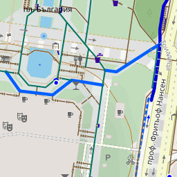
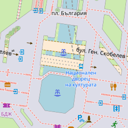
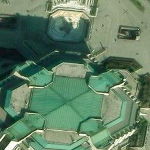

// This project uses Leaflet.js (BSD 2-Clause License)

<!DOCTYPE html>
<html>
  <head>
    <meta charset="utf-8" />
    <title>Velosofize KML Visualizer</title>
    <meta name="viewport" content="width=device-width, initial-scale=1.0">

    <link rel="stylesheet" href="https://unpkg.com/leaflet/dist/leaflet.css" />
    <link rel="stylesheet" href="https://fonts.googleapis.com/css2?family=Material+Symbols+Outlined:opsz,wght,FILL,GRAD@20..48,100..700,0..1,-50..200" />
    <style>
      .material-symbols-outlined {
        font-variation-settings:
          'FILL' 0,
          'wght' 400,
          'GRAD' 0,
          'opsz' 24;
        font-size: 16px;
        color: #e6e5e1; /* Customize icon color */
      }
      body { margin: 0; padding: 0; font-family: sans-serif; }
      #map { width: 100vw; height: 100vh; position: absolute; top: 0; left: 0; }
      #project-header {
        position: absolute;
        top: 10px;
        left: 50%;
        transform: translateX(-50%);
        background: rgba(8, 12, 59, 0.9);
        padding: 6px 12px;
        border-radius: 8px;
        box-shadow: 0 0 5px rgba(0, 0, 0, 0.2);
        z-index: 1000;
        display: flex;
        align-items: center;
        gap: 8px;
        color: white;
        font-size: 24px;
        font-family: sans-serif;
      }
      #project-header img {
        width: 24px;
        height: 24px;
        border-radius: 4px;
      }
      #layer-buttons {
        position: absolute;
        bottom: 10px;
        right: 10px;
        background: rgba(8, 12, 59, 0.9);
        padding: 6px 6px;
        border-radius: 2px;
        box-shadow: none; /* Remove the shadow */
        z-index: 1000;
        display: flex;
        flex-direction: column;
        gap: 8px;
      }
      #layer-buttons button {
        margin: 0 4px;
        padding: 4px 4px;
        font-size: 14px;
        cursor: pointer;
        border: none; /* Remove the white outline */
      }
      #link-buttons {
        position: absolute;
        top: 10px;
        left: 10px;
        background: rgba(8, 12, 59, 0.9);
        padding: 6px 6px;
        border-radius: 8px;
        box-shadow: 0 0 5px rgba(0, 0, 0, 0.2);
        z-index: 1000;
        display: flex;
        flex-direction: column; /* Change layout to vertical */
        gap: 8px; /* Add spacing between buttons */
      }
      #link-buttons a {
        display: inline-block;
        width: 32px;
        height: 32px;
        background: rgba(8, 12, 59, 0.9);
        border-radius: 50%;
        text-align: center;
        line-height: 40px;
        box-shadow: 0 0 5px rgba(0, 0, 0, 0.2);
        transition: transform 0.2s;
      }
      #link-buttons a:hover {
        transform: scale(1.15);
      }
      #link-buttons a img {
        width: 30px;
        height: 30px;
        vertical-align: middle;
      }
    </style>
  </head>
  <body>
    <div id="map"></div>

    <div id="project-header">
      <a href="https://velosofist.github.io/velosofize/index.html"
        style="text-decoration:none; color:white; display:flex; align-items:center; gap:8px;">
        
        <span>VELOSOFIZE</span>
      </a>
    </div>

    <script src="https://unpkg.com/leaflet/dist/leaflet.js"></script>
    <script
      src="https://unpkg.com/leaflet-omnivore/leaflet-omnivore.min.js"></script>

    <div id="link-buttons">
      <a href="https://www.google.com/maps/d/u/0/edit?mid=13Ke06MOSLTuBBbr2ITKNV7kLhs_v2Qc&usp=sharing"
        target="_blank" title="Google Maps">
        
      </a>
      <a href="https://earth.google.com/web/@42.68536362,23.34252187,551.21893103a,13559.28278408d,35y,-0h,0t,0r/data=CgRCAggBMigKJgokCiAxM0tlMDZNT1NMVHVCQmJyMklUS05WN2tMaHNfdjJRYyACOgMKATBCAggASggI3rfSkgMQAQ"
        target="_blank" title="Google Earth">
        
      </a>
      <a href="https://github.com/velosofist/velosofize/tree/main/export_formats"
        target="_blank" title="GitHub">
        
      </a>
    </div>

    <div id="layer-buttons">
      <a style="text-decoration:none; display:flex; align-items:left; gap:6px; margin:4px; justify-content:center; font-weight:bold; color:rgb(224, 224, 224);">
        Слоеве
      </a>
      <button onclick="setBaseLayer('cyclosm')" title="CyclOSM">
        
      </button>
      <button onclick="setBaseLayer('osm')" title="OpenStreetMap">
        
      </button>
      <button onclick="setBaseLayer('esri')" title="Satellite">
        
      </button>
    </div>

    <script>
      // const map = L.map('map').setView([42.685534, 23.319048], 13);
      const map = L.map('map', {
        center: [42.685534, 23.319048],
        zoom: 13,
        zoomControl: false
      });

      // Add zoom control manually in a different position
      L.control.zoom({
        position: 'bottomleft'
      }).addTo(map);
    
      const layers = {
        cyclosm: L.tileLayer('https://{s}.tile-cyclosm.openstreetmap.fr/cyclosm/{z}/{x}/{y}.png', {
          attribution: '&copy; CyclOSM, OpenStreetMap contributors'
        }),
        osm: L.tileLayer('https://{s}.tile.openstreetmap.org/{z}/{x}/{y}.png', {
          attribution: '&copy; OpenStreetMap contributors'
        }),
        esri: L.tileLayer('https://server.arcgisonline.com/ArcGIS/rest/services/World_Imagery/MapServer/tile/{z}/{y}/{x}', {
          attribution: '&copy; Esri, Earthstar Geographics'
        })
      };
    
      // Default base layer
      layers.cyclosm.addTo(map);
      let currentBaseLayer = layers.cyclosm;
    
      function setBaseLayer(layerName) {
        if (layers[layerName] && currentBaseLayer !== layers[layerName]) {
          map.removeLayer(currentBaseLayer);
          map.addLayer(layers[layerName]);
          currentBaseLayer = layers[layerName];
        }
      }
    
      const kmlFiles = [
        'https://raw.githubusercontent.com/velosofist/velosofize/main/export_formats/velosofize_export.kml',
        'https://raw.githubusercontent.com/velosofist/velosofize/main/export_formats/.ignore/transport.kml',
        'https://raw.githubusercontent.com/velosofist/velosofize/main/export_formats/.ignore/others.kml',
        'https://raw.githubusercontent.com/velosofist/velosofize/main/export_formats/.ignore/crossings.kml',
        'https://raw.githubusercontent.com/velosofist/velosofize/main/export_formats/.ignore/slow_zones.kml'
      ];

      function styleFromStyleUrl(styleUrl) {
        const match = styleUrl?.match(/#line-([0-9A-Fa-f]{6})/);
        if (match) {
          return {
            color: `#${match[1]}`,
            weight: 3,
            opacity: 1
          };
        } else {
          return {
            color: "#0074D9",
            weight: 3,
            opacity: 0.8
          };
        }
      }

      function colorFromStyleUrl(styleUrl) {
        const match = styleUrl?.match(/#(?:icon-\d+-)?([0-9A-Fa-f]{6})/);
        return match ? `#${match[1]}` : "#CCCCCC";
      }

      kmlFiles.forEach((kmlUrl) => {
        omnivore.kml(kmlUrl, null, L.geoJson(null, {
          filter: function(feature) {
            const category = feature.properties?.["Категория #"];
            // Include features with "Категория #" >= 3 or features without "Категория #"
            return category === undefined || parseInt(category, 10) >= 3;
          },
          style: function(feature) {
            const styleUrl = feature.properties?.styleUrl;
            const match = styleUrl?.match(/#line-([0-9A-Fa-f]{6})/);
      
            // Determine weight based on feature type
            let feature_weight;
            if (feature.geometry?.type === 'Point') {
              feature_weight = 1; // Weight for points
            } else if (feature.geometry?.type === 'LineString') {
              feature_weight = 4; // Weight for lines
            } else if (feature.geometry?.type === 'Polygon') {
              feature_weight = 0; // Weight for polygons
            }
      
            // Return style based on match and feature type
            if (match) {
              return {
                color: `#${match[1]}`,
                weight: feature_weight,
                opacity: 1
              };
            } else {
              return {
                color: "#0074D9",
                weight: feature_weight,
                opacity: 0.8
              };
            }
          },

          pointToLayer: function(feature, latlng) {
            const styleUrl = feature.properties?.styleUrl;
            const fillColor = colorFromStyleUrl(styleUrl); // Use colorFromStyleUrl to determine the circle color dynamically

            // Extract the relevant style (ignoring everything after the second '-')
            const relevantStyle = styleUrl?.split('-')[1]?.split('-')[0];

            // Define a mapping of relevant styles to Material Symbols icon names
            const iconMapping = {
              '1589': 'fitness_center',
              '1877': 'stairs_2',
              '1833': 'directions_walk',
              '1718': 'tram',
              '1716': 'train',
              '1703': 'water_bottle',
            };

            const iconName = iconMapping[relevantStyle] || 'help'; // Default to 'help' if no match is found

            // Create a combined divIcon with both the circle and the Material Symbols icon
            const combinedIconHtml = `
              <div style="position: relative; width: 24px; height: 24px;">
                <div style="width: 22px; height: 22px; border-radius: 50%; background-color: ${fillColor}; opacity: 0.8; border: 1px solid white;"></div>
                <span class="material-symbols-outlined" style="position: absolute; top: 4px; left: 4px; font-size: 16px; color: #e6e5e1; text-shadow: 0px 0px 2px black;">${iconName}</span>
              </div>
            `;

            const combinedDivIcon = L.divIcon({
              className: 'custom-combined-icon',
              html: combinedIconHtml,
              iconSize: [24, 24], // Adjust size as needed
              iconAnchor: [12, 12] // Center the icon
            });

            // Create a marker with the combined icon
            return L.marker(latlng, { icon: combinedDivIcon });
          },

          onEachFeature: function(feature, layer) {
            // Make only points interactive
            if (feature.geometry?.type === 'Point') {
              if (feature.properties?.name) {
                layer.bindPopup(`<strong>${feature.properties.name}</strong>`);
              }
            }
          }
        })).addTo(map);
      });

      const markers = [];
      let line = null;
      let popup = null;

      function addLabeledMarker(latlng) {
        if (markers.length >= 2) return;

        const label = markers.length === 0 ? 'A' : 'B';

        const marker = L.marker(latlng, {
          draggable: true,
          title: label,
        }).addTo(map);

        marker.bindTooltip(label, { permanent: true, direction: 'top' }).openTooltip();

        // Remove marker on click
        marker.on('click', () => {
          map.removeLayer(marker);
          const index = markers.indexOf(marker);
          if (index !== -1) {
            markers.splice(index, 1);
            updateLabels();
            updateLine();
          }
        });

        marker.on('drag', updateLine); // update line if marker moves

        markers.push(marker);
        updateLine();
      }

      function updateLabels() {
        markers.forEach((marker, idx) => {
          const newLabel = idx === 0 ? 'A' : 'B';
          marker.setTooltipContent(newLabel);
        });
      }

      function updateLine() {
        // Remove existing line and popup
        if (line) {
          map.removeLayer(line);
          line = null;
        }
        if (popup) {
          map.removeLayer(popup);
          popup = null;
        }

        if (markers.length === 2) {
          const latlngs = [markers[0].getLatLng(), markers[1].getLatLng()];
          line = L.polyline(latlngs, { color: 'blue', weight: 3, dashArray: '5, 10' }).addTo(map);

          const midLat = (latlngs[0].lat + latlngs[1].lat) / 2;
          const midLng = (latlngs[0].lng + latlngs[1].lng) / 2;
          const midpoint = L.latLng(midLat, midLng);

          // const gmapsIcon = 'https://upload.wikimedia.org/wikipedia/commons/a/aa/Google_Maps_icon_%282020%29.svg';
          const gmapsIcon = 'https://t1.gstatic.com/faviconV2?client=SOCIAL&type=FAVICON&fallback_opts=TYPE,SIZE,URL&url=https://maps.google.com';
          const urlGmapsAB = `https://www.google.com/maps/dir/?api=1&origin=${latlngs[0].lat},${latlngs[0].lng}&destination=${latlngs[1].lat},${latlngs[1].lng}&travelmode=walking`;
          const urlGmapsBA = `https://www.google.com/maps/dir/?api=1&origin=${latlngs[1].lat},${latlngs[1].lng}&destination=${latlngs[0].lat},${latlngs[0].lng}&travelmode=walking`;
          
          // const moovitIcon = 'https://play-lh.googleusercontent.com/xsU7mWsfvM6ZFRWi6R3FSukXBRDRaOeKJH-_Y1uPyZvGPM6O2_azLBCh2Ymc4qV4MVg'; 
          const moovitIcon = 'https://t1.gstatic.com/faviconV2?client=SOCIAL&type=FAVICON&fallback_opts=TYPE,SIZE,URL&url=https://moovitapp.com/'; 
          const urlMoovitAB = `https://moovitapp.com/tripplan/sofia_%D1%81%D0%BE%D1%84%D0%B8%D1%8F-3501/en?ref=12&lang=en&fll=${latlngs[0].lat}_${latlngs[0].lng}&tll=${latlngs[1].lat}_${latlngs[1].lng}`;
          const urlMoovitBA = `https://moovitapp.com/tripplan/sofia_%D1%81%D0%BE%D1%84%D0%B8%D1%8F-3501/en?ref=12&lang=en&fll=${latlngs[1].lat}_${latlngs[1].lng}&tll=${latlngs[0].lat}_${latlngs[0].lng}`;
          
          const orsIcon = 'https://t1.gstatic.com/faviconV2?client=SOCIAL&type=FAVICON&fallback_opts=TYPE,SIZE,URL&url=https://cyclosm.org/';
          const urlOrsAB = `https://maps.openrouteservice.org/directions?n1=${latlngs[0].lat}&n2=${latlngs[0].lng}&n3=14&a=${latlngs[0].lat},${latlngs[0].lng},${latlngs[1].lat},${latlngs[1].lng}&b=1&c=0&k1=en-US&k2=km`;
          const urlOrsBA = `https://maps.openrouteservice.org/directions?n1=${latlngs[1].lat}&n2=${latlngs[1].lng}&n3=14&a=${latlngs[1].lat},${latlngs[1].lng},${latlngs[0].lat},${latlngs[0].lng}&b=1&c=0&k1=en-US&k2=km`;

          const popupHtml = `
            <div style="text-align:center;">
              
              <!--
              <a style="text-decoration:none; display:flex; align-items:left; gap:6px; margin:4px; justify-content:left; font-weight:bold; color:black;">
                Google Maps
              </a>
              <a href="${urlGmapsAB}" target="_blank" style="text-decoration:none; display:flex; align-items:left; gap:6px; margin:4px; justify-content:left;">
                
                A → B
              </a>
              <a href="${urlGmapsBA}" target="_blank" style="text-decoration:none; display:flex; align-items:left; gap:6px; margin:4px; justify-content:left;">
                
                B → A
              </a>
              -->

              <a style="text-decoration:none; display:flex; align-items:left; gap:6px; margin:4px; justify-content:left; font-weight:bold; color:black;">
                Moovit
              </a>
              <a href="${urlMoovitAB}" target="_blank" style="text-decoration:none; display:flex; align-items:left; gap:6px; margin:4px; justify-content:left;">
                
                A → B
              </a>
              <a href="${urlMoovitBA}" target="_blank" style="text-decoration:none; display:flex; align-items:left; gap:6px; margin:4px; justify-content:left;">
                
                B → A
              </a>
              
              <a style="text-decoration:none; display:flex; align-items:left; gap:6px; margin:4px; justify-content:left; font-weight:bold; color:black;">
                OpenRouteService
              </a>
              <a href="${urlOrsAB}" target="_blank" style="text-decoration:none; display:flex; align-items:left; gap:6px; margin:4px; justify-content:left;">
                
                A → B
              </a>
              <a href="${urlOrsBA}" target="_blank" style="text-decoration:none; display:flex; align-items:left; gap:6px; margin:4px; justify-content:left;">
                
                B → A
              </a>
            </div>
          `;

          popup = L.popup({ closeButton: false, autoClose: false })
            .setLatLng(midpoint)
            .setContent(popupHtml)
            .addTo(map);
        }
      }

      map.on('contextmenu', e => addLabeledMarker(e.latlng));
  </script>
  </body>
</html>